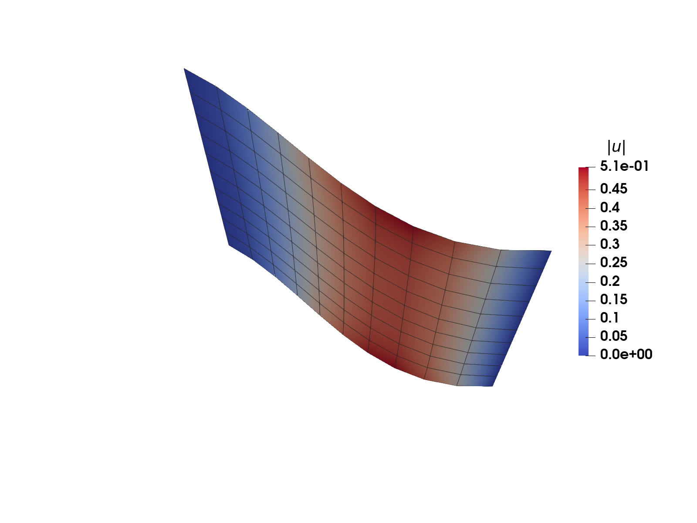
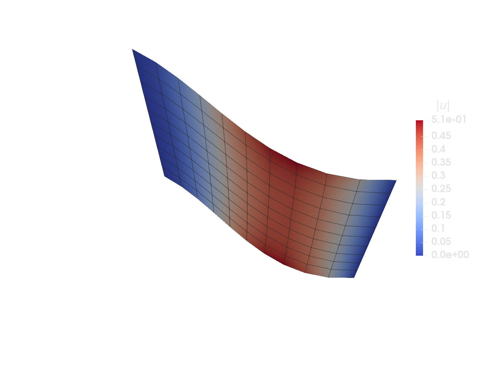
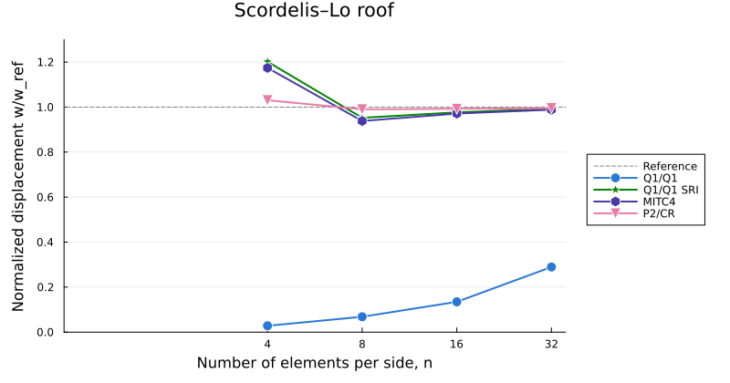

runic: off
Linear shell with drilling rotations


Figure 1: Deformation of the Scordelis–Lo roof modelled with MITC4 shell elements (deformation magnified).
The figure above is a placeholder from the previous version of this tutorial (a flat plate) and will be replaced by a figure of the Scordelis–Lo roof once the screenshots are regenerated with this tutorial.
This example is also available as a Jupyter notebook: linear_shell.ipynb.
Introduction
A multitude of different shell elements have been developed through the years, differing in e.g. the underlying shell theory, the choice of degrees of freedom, the interpolations, and the techniques used to avoid locking. In this tutorial we show how a shell element with three rotational degrees of freedom per node can be implemented in Ferrite. We consider a linear Reissner–Mindlin shell, where the displacement field is described by the displacement of the mid-surface, $\boldsymbol{u}_0$, and an infinitesimal rotation vector, $\boldsymbol{\omega}$, with three global components. The tutorial is inspired by the linear shell demo of the Numerical tours of continuum mechanics using FEniCS by J. Bleyer, which is a small displacement version of the shell model of Campello et al. (2003).
A common choice for Reissner–Mindlin shells is to use only two rotational degrees of freedom per node, defined in a director frame at each node. This requires that the director frames are shared between the elements, which complicates the implementation at kinks and intersections of the shell, and restricts the rotation interpolation to the geometric nodes. With three global rotation components, these difficulties disappear: the rotation vector is continuous between the elements irrespective of the orientation of the elements, and any rotation interpolation can be used. Furthermore, the shell can be modelled as an assembly of flat elements (facets). The price to pay is that the rotation about the normal, the drilling rotation, does not appear in the classical shell theory, and must be stabilized.
A well-known problem for Reissner–Mindlin shells (and plates and Timoshenko beams) is shear locking. For thin shells, the transverse shear strains should vanish (the Kirchhoff–Love limit), and a finite element discretization which is not able to represent pure bending with zero shear strains becomes overly stiff as the thickness decreases. There are many strategies to alleviate shear locking, e.g.
- Reduced and selective reduced integration (SRI): the shear energy is integrated with a lower order quadrature rule, such that fewer shear constraints are enforced. This is simple, but may introduce spurious zero energy (hourglass) modes.
- Assumed natural strains (ANS): the shear strains are sampled at special tying points where they are known to be accurate, and interpolated from these points over the element. This is the approach of the MITC (mixed interpolation of tensorial components) family of elements.
- Mixed order and non-conforming interpolations: by choosing the interpolations for the displacements and rotations such that the constraint $\boldsymbol{\gamma} = \boldsymbol{0}$ can be fulfilled without also restricting the bending modes. An example is the combination of quadratic displacements and non-conforming Crouzeix–Raviart rotations.
- Other approaches include enhanced assumed strains (EAS), discrete shear gap (DSG) methods, and mixed formulations.
In this tutorial we implement a general shell element for different combinations of displacement and rotation interpolations, a MITC4 element based on assumed natural strains, and a P2/CR element with quadratic displacements and Crouzeix–Raviart rotations. Finally, we compare the elements for the Scordelis–Lo roof, a classical benchmark for curved shells.
The implementation makes use of the local frame derivatives of the CellValues, see shape_local_gradient, which give the derivatives of the shape functions wrt. Cartesian coordinates in the tangent plane of the shell.
Theory
Kinematics
We parametrize the mid-surface of the shell with two surface coordinates, $\boldsymbol{s} = (s_1, s_2)$. For now, these are arbitrary, e.g. the reference coordinates $\boldsymbol{\xi}$ of an element; a convenient choice is made below. The position of a material point in the shell is described by the position of the mid-surface, $\boldsymbol{x}_0(\boldsymbol{s})$, and the unit normal of the mid-surface, $\boldsymbol{n}(\boldsymbol{s})$,
\[\boldsymbol{x}(\boldsymbol{s}, z) = \boldsymbol{x}_0(\boldsymbol{s}) + z \, \boldsymbol{n}(\boldsymbol{s}), \quad z \in \left[-\frac{h}{2}, \frac{h}{2}\right]\]
where $z$ is the (physical) thickness coordinate, and $h$ is the thickness of the shell. The covariant base vectors of the mid-surface,
\[\boldsymbol{a}_\alpha = \frac{\partial \boldsymbol{x}_0}{\partial s_\alpha} = \boldsymbol{x}_{0,\alpha}, \qquad \alpha \in \{1, 2\},\]
are tangent to the mid-surface. Here, and in the following, a comma denotes the partial derivative wrt. $s_\alpha$.
In contrast to formulations with a smooth director field, the normal is here computed element by element from the geometry. We consider shells that are discretized with flat elements, for which the normal is constant within each element, $\boldsymbol{n}_{,\alpha} = \boldsymbol{0}$, but jumps between the elements. This is the case for linear triangles, and for bilinear quadrilaterals with coplanar nodes (such as the elements used for the cylindrical roof below).
The reason for using flat elements is that they avoid the terms that arise from the curvature of the element: within a curved element, the normal varies, $\boldsymbol{n}_{,\alpha} \neq \boldsymbol{0}$, which gives additional terms in the base vectors through the thickness, in the derivatives of the fiber change, and in the volume element (the shell shifter, see below). These terms involve the second derivatives of the geometry (the curvature tensor of the mid-surface), and complicate the formulation considerably. With flat elements, all of these terms vanish exactly, and the curvature of the shell is instead represented by the kinks between the elements, which converge to the curved geometry as the mesh is refined. Furthermore, flat elements can directly be used for shells with kinks and intersections, e.g. folded plates or stiffened panels.
Following the Reissner–Mindlin assumption, fibers that are normal to the mid-surface remain straight (but not necessarily normal) during the deformation. For small rotations, the fiber is rotated by the rotation vector $\boldsymbol{\omega}$, and the displacement field is
\[\boldsymbol{u}(\boldsymbol{s}, z) = \boldsymbol{u}_0(\boldsymbol{s}) + z \, \boldsymbol{\theta}(\boldsymbol{s}), \qquad \boldsymbol{\theta} = \boldsymbol{\omega} \times \boldsymbol{n},\]
where $\boldsymbol{u}_0$ is the displacement of the mid-surface, and $\boldsymbol{\theta}$ is the change of the normal fiber. The rotation vector has three (global) components, but only its tangential part changes the fiber: the drilling rotation, $\omega_n = \boldsymbol{\omega} \cdot \boldsymbol{n}$, gives $\boldsymbol{\theta} = \boldsymbol{0}$. We return to this below.
Weak form and strain measures
The shell is a three-dimensional body, $\Omega$, and as for any linear elastic body, the weak form of equilibrium is given by the principle of virtual work,
\[\int_\Omega \boldsymbol{\sigma} : \delta\boldsymbol{\varepsilon}^\mathrm{3D} \, \mathrm{d}\Omega = \delta W_\mathrm{ext}, \qquad \boldsymbol{\varepsilon}^\mathrm{3D} = \mathrm{sym}\left(\boldsymbol{u} \otimes \nabla\right),\]
where $\boldsymbol{\sigma}$ is the stress and $\boldsymbol{\varepsilon}^\mathrm{3D}$ is the small strain tensor. In the curvilinear coordinates $(s_1, s_2, z)$, it is natural to work with the covariant components of the strain,
\[\varepsilon^\mathrm{3D}_{ij} = \boldsymbol{g}_i \cdot \boldsymbol{\varepsilon}^\mathrm{3D} \cdot \boldsymbol{g}_j = \frac{1}{2}\left(\boldsymbol{g}_i \cdot \frac{\partial \boldsymbol{u}}{\partial s_j} + \boldsymbol{g}_j \cdot \frac{\partial \boldsymbol{u}}{\partial s_i}\right), \qquad i, j \in \{1, 2, 3\}, \quad s_3 = z,\]
where $\boldsymbol{g}_i = \partial \boldsymbol{x} / \partial s_i$ are the covariant base vectors of the shell body,
\[\boldsymbol{g}_\alpha = \boldsymbol{a}_\alpha + z \, \boldsymbol{n}_{,\alpha} = \boldsymbol{a}_\alpha, \qquad \boldsymbol{g}_3 = \boldsymbol{n},\]
since $\boldsymbol{n}_{,\alpha} = \boldsymbol{0}$ within a flat element. The stress power density is then $\boldsymbol{\sigma} : \delta\boldsymbol{\varepsilon}^\mathrm{3D} = \sigma^{ij} \delta\varepsilon^\mathrm{3D}_{ij}$, where $\sigma^{ij}$ are the contravariant components of the stress (with summation over repeated indices).
We now insert the shell kinematics. The derivatives of the displacement are
\[\frac{\partial \boldsymbol{u}}{\partial s_\alpha} = \boldsymbol{u}_{0,\alpha} + z \, \boldsymbol{\theta}_{,\alpha}, \qquad \boldsymbol{\theta}_{,\alpha} = \boldsymbol{\omega}_{,\alpha} \times \boldsymbol{n}, \qquad \frac{\partial \boldsymbol{u}}{\partial z} = \boldsymbol{\theta},\]
and the strain components become
- in-plane components:
\[\varepsilon^\mathrm{3D}_{\alpha\beta} = \varepsilon_{\alpha\beta} + z \, \kappa_{\alpha\beta}, \qquad \varepsilon_{\alpha\beta} = \frac{1}{2}\left(\boldsymbol{a}_\alpha \cdot \boldsymbol{u}_{0,\beta} + \boldsymbol{a}_\beta \cdot \boldsymbol{u}_{0,\alpha}\right), \qquad \kappa_{\alpha\beta} = \frac{1}{2}\left(\boldsymbol{a}_\alpha \cdot \boldsymbol{\theta}_{,\beta} + \boldsymbol{a}_\beta \cdot \boldsymbol{\theta}_{,\alpha}\right)\]
- transverse shear components:
\[2\varepsilon^\mathrm{3D}_{\alpha 3} = \boldsymbol{a}_\alpha \cdot \boldsymbol{\theta} + \boldsymbol{n} \cdot \frac{\partial \boldsymbol{u}}{\partial s_\alpha} = \gamma_\alpha + z \, \boldsymbol{n} \cdot \boldsymbol{\theta}_{,\alpha} = \gamma_\alpha, \qquad \gamma_\alpha = \boldsymbol{n} \cdot \boldsymbol{u}_{0,\alpha} + \boldsymbol{a}_\alpha \cdot \boldsymbol{\theta}\]
where the $z$-term vanishes since $\boldsymbol{\theta}_{,\alpha} = \boldsymbol{\omega}_{,\alpha} \times \boldsymbol{n}$ is orthogonal to $\boldsymbol{n}$, i.e. the shear strain is constant through the thickness. - normal component: $\varepsilon^\mathrm{3D}_{33} = \boldsymbol{n} \cdot \boldsymbol{\theta} = \boldsymbol{n} \cdot (\boldsymbol{\omega} \times \boldsymbol{n}) = 0$, i.e. the shell is inextensible in the thickness direction.
Hence, the strain field of the shell is described by three strain measures on the mid-surface: the membrane strains, $\varepsilon_{\alpha\beta}$, the curvatures (bending strains), $\kappa_{\alpha\beta}$, and the transverse shear strains, $\gamma_\alpha$. The same expressions hold for the virtual strains, with $\boldsymbol{u}_0$ and $\boldsymbol{\omega}$ replaced by $\delta\boldsymbol{u}_0$ and $\delta\boldsymbol{\omega}$. Note that the drilling rotation, $\omega_n$, does not enter any of the strain measures.
Sectional forces
Inserting the virtual strains in the stress power density gives, since $\delta\varepsilon^\mathrm{3D}_{33} = 0$,
\[\boldsymbol{\sigma} : \delta\boldsymbol{\varepsilon}^\mathrm{3D} = \sigma^{\alpha\beta} \delta\varepsilon^\mathrm{3D}_{\alpha\beta} + 2 \sigma^{\alpha 3} \delta\varepsilon^\mathrm{3D}_{\alpha 3} = \sigma^{\alpha\beta} \left(\delta\varepsilon_{\alpha\beta} + z \, \delta\kappa_{\alpha\beta}\right) + \sigma^{\alpha 3} \delta\gamma_\alpha.\]
To split the volume integral into an integral over the mid-surface and an integral through the thickness, we express the volume element in the shell coordinates,
\[\mathrm{d}\Omega = \left[\boldsymbol{g}_1, \boldsymbol{g}_2, \boldsymbol{g}_3\right] \mathrm{d}s_1 \mathrm{d}s_2 \mathrm{d}z = \mu \, \mathrm{d}z \, \mathrm{d}A, \qquad \mathrm{d}A = \Vert \boldsymbol{a}_1 \times \boldsymbol{a}_2 \Vert \, \mathrm{d}s_1 \mathrm{d}s_2,\]
where $\mathrm{d}A$ is the area element of the mid-surface. The shell shifter, $\mu$, accounts for the change of the base vectors, $\boldsymbol{g}_\alpha = \boldsymbol{a}_\alpha + z \boldsymbol{n}_{,\alpha}$, through the thickness. For a smoothly curved shell, $\mu = 1 - 2Hz + Kz^2$, where $H$ and $K$ are the mean and Gaussian curvatures, but for flat elements, $\boldsymbol{g}_\alpha = \boldsymbol{a}_\alpha$ and
\[\mu = 1\]
exactly. The curvature of the shell is instead represented by the kinks between the elements.
Since the strain measures do not depend on $z$, the integral through the thickness can now be carried out separately:
\[\int_\Omega \boldsymbol{\sigma} : \delta\boldsymbol{\varepsilon}^\mathrm{3D} \, \mathrm{d}\Omega = \int_{A} \int_{-h/2}^{h/2} \boldsymbol{\sigma} : \delta\boldsymbol{\varepsilon}^\mathrm{3D} \, \mu \, \mathrm{d}z \, \mathrm{d}A = \int_{A} \left( N^{\alpha\beta} \delta\varepsilon_{\alpha\beta} + M^{\alpha\beta} \delta\kappa_{\alpha\beta} + Q^{\alpha} \delta\gamma_{\alpha} \right) \mathrm{d}A,\]
where the sectional forces, i.e. the membrane forces $N^{\alpha\beta}$, the bending moments $M^{\alpha\beta}$, and the shear forces $Q^\alpha$ (all per unit length), appear naturally as the stress resultants
\[N^{\alpha\beta} = \int_{-h/2}^{h/2} \sigma^{\alpha\beta} \, \mathrm{d}z, \qquad M^{\alpha\beta} = \int_{-h/2}^{h/2} z \, \sigma^{\alpha\beta} \, \mathrm{d}z, \qquad Q^{\alpha} = \int_{-h/2}^{h/2} \sigma^{\alpha 3} \, \mathrm{d}z.\]
Each strain measure is thus work conjugate to one sectional force.
Finally, the external virtual work from a distributed surface load $\boldsymbol{q}$ (per unit area) acting on the mid-surface is
\[\delta W_\mathrm{ext} = \int_A \delta\boldsymbol{u}_0 \cdot \boldsymbol{q} \, \mathrm{d}A.\]
Constitutive relations and the local frame
So far, the surface coordinates are arbitrary. In general curvilinear coordinates, the material law involves the metric of the surface, $a_{\alpha\beta} = \boldsymbol{a}_\alpha \cdot \boldsymbol{a}_\beta$, to relate the contravariant stress components to the covariant strain components. The material law becomes particularly simple if we, in each point, choose surface coordinates such that the base vectors are orthonormal, $\boldsymbol{a}_\alpha \cdot \boldsymbol{a}_\beta = \delta_{\alpha\beta}$. Then, the covariant and contravariant components coincide, and all components above are simply Cartesian components in the local orthonormal frame
\[\left(\boldsymbol{e}_1, \boldsymbol{e}_2, \boldsymbol{n}\right) = \left(\boldsymbol{a}_1, \boldsymbol{a}_2, \boldsymbol{n}\right).\]
This frame is the natural frame for a shell: the in-plane stresses, $\sigma_{\alpha\beta}$, carry the membrane forces and the bending moments, the transverse shear stresses, $\sigma_{\alpha 3}$, carry the shear forces, and the normal stress, $\sigma_{33}$, is negligible compared to the other stresses, which is the plane stress assumption.
For a linear elastic material in plane stress ($\sigma_{33} = 0$), the in-plane stress, $\boldsymbol{\sigma}_p = [\sigma_{\alpha\beta}]$, is $\boldsymbol{\sigma}_p = \mathsf{C} : (\boldsymbol{\varepsilon} + z \boldsymbol{\kappa})$, and the transverse shear stress, $\boldsymbol{\tau} = [\sigma_{\alpha 3}]$, is $\boldsymbol{\tau} = G \boldsymbol{\gamma}$, where $G$ is the shear modulus and $\mathsf{C}$ is the plane stress stiffness tensor,
\[\mathsf{C} = \frac{E}{1 - \nu^2} \left[ (1-\nu) \mathsf{I}^\mathrm{sym} + \nu \boldsymbol{I} \otimes \boldsymbol{I} \right].\]
For a homogeneous shell, inserting the stresses into the resultants and integrating through the thickness gives
\[\boldsymbol{N} = \mathsf{A} : \boldsymbol{\varepsilon}, \quad \boldsymbol{M} = \mathsf{D} : \boldsymbol{\kappa}, \quad \boldsymbol{Q} = \boldsymbol{A}_s \cdot \boldsymbol{\gamma}, \qquad \text{with} \qquad \mathsf{A} = h \, \mathsf{C}, \quad \mathsf{D} = \frac{h^3}{12} \mathsf{C}, \quad \boldsymbol{A}_s = k_s h G \boldsymbol{I},\]
where $k_s = 5/6$ is the shear correction factor, which compensates for the constant (instead of parabolic) shear stress through the thickness.
using Ferrite, Plotsfunction plane_stress_stiffness(E, ν) I = one(SymmetricTensor{2, 2}) Isym = one(SymmetricTensor{4, 2}) return E / (1 - ν^2) * ((1 - ν) * Isym + ν * I ⊗ I)end;Drilling rotations
Since the drilling rotation does not enter the strain measures, it has no stiffness. For a smooth shell, or for coplanar elements, the drilling degrees of freedom are therefore undetermined, and the stiffness matrix is singular. (At kinks between elements, the drilling rotation of one element is coupled to the bending rotations of the neighbor, but the system is still ill-conditioned for nearly flat shells.) A common remedy, see e.g. Hughes and Brezzi (1989), is to relate the drilling rotation to the in-plane rotation of the mid-surface,
\[\frac{1}{2}\left(\boldsymbol{e}_2 \cdot \boldsymbol{u}_{0,1} - \boldsymbol{e}_1 \cdot \boldsymbol{u}_{0,2}\right),\]
i.e. the skew symmetric part of the in-plane displacement gradient. Their difference defines the drilling strain,
\[\varpi = \boldsymbol{\omega} \cdot \boldsymbol{n} - \frac{1}{2}\left(\boldsymbol{e}_2 \cdot \boldsymbol{u}_{0,1} - \boldsymbol{e}_1 \cdot \boldsymbol{u}_{0,2}\right),\]
which vanishes for a rigid body rotation. The drilling strain is penalized by adding the term
\[\int_A K_d \, \varpi \, \delta\varpi \, \mathrm{d}A, \qquad K_d = E h^3,\]
to the internal virtual work. The drilling stiffness, $K_d$, is chosen of the same order as the bending stiffness, such that it is small compared to the membrane stiffness, and hardly affects the solution, while still giving a non-singular system.
Strain measures in tensor notation
With the frame vectors collected as the columns of $\boldsymbol{E} = [\boldsymbol{e}_1, \boldsymbol{e}_2]$ ($3 \times 2$), and the derivatives as the columns of $\nabla_s \boldsymbol{u}_0 = [\boldsymbol{u}_{0,1}, \boldsymbol{u}_{0,2}]$ ($3 \times 2$), and similarly for $\nabla_s \boldsymbol{\omega}$, the strain measures can be written compactly as
\[\boldsymbol{\varepsilon} = \mathrm{sym}\left(\boldsymbol{G}\right), \qquad \boldsymbol{\kappa} = \mathrm{sym}\left(\boldsymbol{E}^\mathrm{T} \cdot \nabla_s \boldsymbol{\theta}\right), \qquad \boldsymbol{\gamma} = \left(\nabla_s \boldsymbol{u}_0\right)^\mathrm{T} \cdot \boldsymbol{n} + \boldsymbol{E}^\mathrm{T} \cdot \boldsymbol{\theta}, \qquad \varpi = \boldsymbol{\omega} \cdot \boldsymbol{n} - \frac{1}{2}\left(G_{21} - G_{12}\right),\]
where $\boldsymbol{G} = \boldsymbol{E}^\mathrm{T} \cdot \nabla_s \boldsymbol{u}_0$ is the in-plane displacement gradient. The change of the fiber and its gradient are
\[\boldsymbol{\theta} = \boldsymbol{\omega} \times \boldsymbol{n} = -\boldsymbol{W} \cdot \boldsymbol{\omega}, \qquad \nabla_s \boldsymbol{\theta} = -\boldsymbol{W} \cdot \nabla_s \boldsymbol{\omega},\]
where $\boldsymbol{W}$ is the skew symmetric tensor such that $\boldsymbol{W} \cdot \boldsymbol{v} = \boldsymbol{n} \times \boldsymbol{v}$. With Tensors.jl, the strain measures are computed directly from these definitions:
function skew_tensor(n::Vec{3}) return Tensor{2, 3}((0.0, n[3], -n[2], -n[3], 0.0, n[1], n[2], -n[1], 0.0))endfunction shell_strains(∇u, ω, ∇ω, E, n) W = skew_tensor(n) θ, ∇θ = -(W ⋅ ω), -(W ⋅ ∇ω) G = E' ⋅ ∇u ε = symmetric(G) κ = symmetric(E' ⋅ ∇θ) γ = ∇u' ⋅ n + E' ⋅ θ ϖ = ω ⋅ n - (G[2, 1] - G[1, 2]) / 2 return ε, κ, γ, ϖend;Local Cartesian coordinates from a Gram-Schmidt frame
It remains to construct, in each quadrature point, the orthonormal frame and the derivatives wrt. the corresponding surface coordinates. The element provides the parametrization $\boldsymbol{x}_0(\boldsymbol{\xi})$, with the jacobian $\boldsymbol{J} = \partial \boldsymbol{x}_0 / \partial \boldsymbol{\xi}$ ($3 \times 2$), whose columns are tangent to the mid-surface but in general neither orthogonal nor of unit length. An orthonormal frame is obtained by Gram-Schmidt orthonormalization of the columns, $\boldsymbol{j}_1$ and $\boldsymbol{j}_2$, of the jacobian,
\[\boldsymbol{e}_1 = \frac{\boldsymbol{j}_1}{\Vert \boldsymbol{j}_1 \Vert}, \qquad \boldsymbol{e}_2 = \frac{\boldsymbol{j}_2 - (\boldsymbol{e}_1 \cdot \boldsymbol{j}_2)\boldsymbol{e}_1}{\Vert \boldsymbol{j}_2 - (\boldsymbol{e}_1 \cdot \boldsymbol{j}_2)\boldsymbol{e}_1 \Vert}, \qquad \boldsymbol{n} = \boldsymbol{e}_1 \times \boldsymbol{e}_2,\]
and the local Cartesian coordinates are the projections on the tangent plane at the quadrature point, $\boldsymbol{x}_{0,q}$,
\[\boldsymbol{s} = \boldsymbol{E}^\mathrm{T} \cdot \left(\boldsymbol{x}_0 - \boldsymbol{x}_{0,q}\right), \qquad \boldsymbol{B} = \frac{\partial \boldsymbol{s}}{\partial \boldsymbol{\xi}} = \boldsymbol{E}^\mathrm{T} \cdot \boldsymbol{J}.\]
Since the columns of $\boldsymbol{J}$ lie in the tangent plane, $\boldsymbol{J} = \boldsymbol{E} \cdot \boldsymbol{B}$, and the base vectors are $[\boldsymbol{a}_1, \boldsymbol{a}_2] = \partial \boldsymbol{x}_0 / \partial \boldsymbol{s} = \boldsymbol{J} \cdot \boldsymbol{B}^{-1} = \boldsymbol{E}$, i.e. orthonormal, as required. The derivatives of a shape function wrt. the local coordinates follow from the chain rule, $\partial N / \partial \boldsymbol{s} = \partial N / \partial \boldsymbol{\xi} \cdot \boldsymbol{B}^{-1}$, and the area element is $\mathrm{d}A = \det(\boldsymbol{B}) \, \mathrm{d}\xi_1 \mathrm{d}\xi_2$.
In Ferrite, the frame is computed with Ferrite.gram_schmidt_frame from the jacobians stored in the cell values, and passed to the cell values with reinit_local_frame! after reinit!:
reinit!(cv, x)reinit_local_frame!(cv, Ferrite.gram_schmidt_frame.(Ferrite.getjacobians(cv)))Then, the local derivatives, $\partial N / \partial \boldsymbol{s}$, are given by shape_local_gradient, and getdetJdV gives the area element (multiplied with the quadrature weight) for a surface element embedded in 3D. Note that the frame, and hence the normal, is computed independently in each element. In contrast to formulations with two rotational degrees of freedom, no information about the frames needs to be shared between the elements, since the rotation vector is expressed in global components.
Implementation
Shell values
In each quadrature point, we need the local frame, $\boldsymbol{E}$, and the normal, $\boldsymbol{n}$. These are stored together with the MultiFieldCellValues for the displacement (u) and rotation vector (ω) fields in the following struct:
struct ShellValues{CV} cv::CV E::Vector{MixedTensor2{3, 2, Float64, 6}} # Local frame n::Vector{Vec{3, Float64}} # NormalendThe local gradients are not computed by default, so we must request them with the keyword update_local_gradients = true (this also stores the jacobians). Note that we also give the geometric interpolation explicitly, since it can be different from the displacement and rotation interpolations.
function ShellValues(qr, ipu, ipω, ip_geo) cv = MultiFieldCellValues(qr, (u = ipu^3, ω = ipω^3), ip_geo^3; update_local_gradients = true) nqp = getnquadpoints(cv) return ShellValues(cv, zeros(MixedTensor2{3, 2, Float64, 6}, nqp), zeros(Vec{3, Float64}, nqp))end;For each cell, we update the cell values with the coordinates, x, and compute the local frames and pass them to the cell values:
function Ferrite.reinit!(sv::ShellValues, x) cv = sv.cv reinit!(cv, x) for qp in 1:getnquadpoints(cv) E = Ferrite.gram_schmidt_frame(Ferrite.getjacobian(cv, qp)) sv.E[qp] = E sv.n[qp] = E[:, 1] × E[:, 2] end reinit_local_frame!(cv, sv.E) return svend;The shell element
We collect everything needed to compute the element stiffness in a ShellElement struct. It contains three sets of shell values:
sv: for the membrane, bending and drilling terms (and the external load)sv_shear: for the transverse shear term. Using a different quadrature rule than forsvmakes it possible to use selective reduced integration.sv_ans: evaluated at the tying points of the assumed natural strain (ANS) interpolation. This is only used by the MITC4 element, and isnothingotherwise.
Furthermore, it holds the section stiffnesses, and preallocated vectors for the strains of the test functions in a quadrature point, such that the element routines do not need to allocate.
struct ShellElement{SV, SVS, SVA} sv::SV sv_shear::SVS sv_ans::SVA A::SymmetricTensor{4, 2, Float64, 9} # Membrane stiffness D::SymmetricTensor{4, 2, Float64, 9} # Bending stiffness Aₛ::Tensor{2, 2, Float64, 4} # Transverse shear stiffness K_d::Float64 # Drilling stiffness δε::Vector{SymmetricTensor{2, 2, Float64, 3}} # Membrane strains of the test functions δκ::Vector{SymmetricTensor{2, 2, Float64, 3}} # Curvatures of the test functions δγ::Vector{Vec{2, Float64}} # Transverse shear strains of the test functions δϖ::Vector{Float64} # Drilling strains of the test functions γξ_tying::Matrix{Vec{2, Float64}} # Covariant shear strains in the tying points (MITC4)endfunction ShellElement(ipu, ipω, ip_geo, qr, qr_shear, qr_ans = nothing; h, E, ν, kₛ = 5 / 6) sv = ShellValues(qr, ipu, ipω, ip_geo) sv_ans = qr_ans === nothing ? nothing : ShellValues(qr_ans, ipu, ipω, ip_geo) C = plane_stress_stiffness(E, ν) G = E / (2 * (1 + ν)) ndofs = getnbasefunctions(sv.cv.u) + getnbasefunctions(sv.cv.ω) return ShellElement( sv, ShellValues(qr_shear, ipu, ipω, ip_geo), sv_ans, h * C, h^3 / 12 * C, kₛ * h * G * one(Tensor{2, 2}), E * h^3, zeros(SymmetricTensor{2, 2, Float64, 3}, ndofs), zeros(SymmetricTensor{2, 2, Float64, 3}, ndofs), zeros(Vec{2, Float64}, ndofs), zeros(ndofs), zeros(Vec{2, Float64}, ndofs, 4) )end;function Ferrite.reinit!(se::ShellElement, x) for sv in (se.sv, se.sv_shear, se.sv_ans) sv === nothing || reinit!(sv, x) end return seend;Element routine
To compute the element stiffness matrix, we need the strains, $\delta\boldsymbol{\varepsilon}_i$, $\delta\boldsymbol{\kappa}_i$, $\delta\boldsymbol{\gamma}_i$ and $\delta\varpi_i$, for each test function $i$ of the element. Since the displacement dofs come before the rotation dofs in the element, the first test functions are displacement test functions (with $\boldsymbol{\omega} = \boldsymbol{0}$), and the remaining test functions are rotation test functions (with $\boldsymbol{u}_0 = \boldsymbol{0}$).
function shape_strains(sv::ShellValues, qp, i) cv, E, n = sv.cv, sv.E[qp], sv.n[qp] nu = getnbasefunctions(cv.u) if i <= nu ∇Nu = shape_local_gradient(cv.u, qp, i) return shell_strains(∇Nu, zero(Vec{3}), zero(typeof(∇Nu)), E, n) else Nω, ∇Nω = shape_value(cv.ω, qp, i - nu), shape_local_gradient(cv.ω, qp, i - nu) return shell_strains(zero(typeof(∇Nω)), Nω, ∇Nω, E, n) endend;The membrane, bending, and drilling contributions are integrated with sv, which is also used to integrate the external surface load, q:
\[K_{ij} \mathrel{+}= \int_A \left(\delta\boldsymbol{\varepsilon}_i : \mathsf{A} : \boldsymbol{\varepsilon}_j + \delta\boldsymbol{\kappa}_i : \mathsf{D} : \boldsymbol{\kappa}_j + \delta\varpi_i K_d \varpi_j\right) \mathrm{d}A, \qquad f_{i} \mathrel{+}= \int_A \delta\boldsymbol{u}_{0,i} \cdot \boldsymbol{q} \, \mathrm{d}A\]
function assemble_membrane_bending_drilling!(ke, fe, se::ShellElement, q) sv = se.sv cv = sv.cv δε, δκ, δϖ = se.δε, se.δκ, se.δϖ ndofs = size(ke, 1) for qp in 1:getnquadpoints(cv) dA = getdetJdV(cv, qp) for i in 1:ndofs δε[i], δκ[i], _, δϖ[i] = shape_strains(sv, qp, i) end for i in 1:ndofs, j in 1:ndofs ke[i, j] += (δε[i] ⊡ se.A ⊡ δε[j] + δκ[i] ⊡ se.D ⊡ δκ[j] + δϖ[i] * se.K_d * δϖ[j]) * dA end for i in 1:getnbasefunctions(cv.u) fe[i] += shape_value(cv.u, qp, i) ⋅ q * dA end end return ke, feend;The transverse shear contribution,
\[K_{ij} \mathrel{+}= \int_A \delta\boldsymbol{\gamma}_i \cdot \boldsymbol{A}_s \cdot \boldsymbol{\gamma}_j \, \mathrm{d}A,\]
is integrated with sv_shear:
function assemble_shear!(ke, se::ShellElement) sv = se.sv_shear δγ = se.δγ ndofs = size(ke, 1) for qp in 1:getnquadpoints(sv.cv) dA = getdetJdV(sv.cv, qp) for i in 1:ndofs _, _, δγ[i], _ = shape_strains(sv, qp, i) end for i in 1:ndofs, j in 1:ndofs ke[i, j] += δγ[i] ⋅ se.Aₛ ⋅ δγ[j] * dA end end return keend;The standard element routine is then simply
function assemble_shell!(ke, fe, se::ShellElement, q) assemble_membrane_bending_drilling!(ke, fe, se, q) assemble_shear!(ke, se) return ke, feend;MITC4: Assumed natural strains
For the bilinear element, the transverse shear strains computed from the displacement and rotation fields cannot vanish for a pure bending state, which causes shear locking. In the MITC4 element, the shear strains are instead evaluated at four tying points, $A = (0, 1)$, $B = (-1, 0)$, $C = (0, -1)$, and $D = (1, 0)$, at the edge midpoints of the reference element, and then interpolated over the element. The interpolation is done for the covariant components of the shear strain wrt. the reference coordinates, $\boldsymbol{\xi}$ (i.e. the components along the natural base vectors $\partial\boldsymbol{x}_0/\partial\xi_\alpha$), which are invariant to the choice of local frame. These are related to the components in the local frame by
\[\boldsymbol{\gamma}_\xi = \boldsymbol{B}^\mathrm{T} \cdot \boldsymbol{\gamma}, \qquad \boldsymbol{B} = \boldsymbol{E}^\mathrm{T} \cdot \boldsymbol{J},\]
where $\boldsymbol{B} = \partial\boldsymbol{s}/\partial\boldsymbol{\xi}$ is the jacobian from the reference to the local coordinates. The first component, $\gamma_{\xi_1}$, is interpolated linearly in $\xi_2$ between the tying points $A$ and $C$, and the second component, $\gamma_{\xi_2}$, is interpolated linearly in $\xi_1$ between the tying points $B$ and $D$:
\[\tilde{\gamma}_{\xi_1} = \frac{1}{2}(1 + \xi_2) \gamma^A_{\xi_1} + \frac{1}{2}(1 - \xi_2) \gamma^C_{\xi_1}, \qquad \tilde{\gamma}_{\xi_2} = \frac{1}{2}(1 - \xi_1) \gamma^B_{\xi_2} + \frac{1}{2}(1 + \xi_1) \gamma^D_{\xi_2}\]
This can be written compactly as $\tilde{\boldsymbol{\gamma}}_\xi = \sum_t \boldsymbol{P}_t(\boldsymbol{\xi}) \cdot \boldsymbol{\gamma}^t_\xi$, with the tying interpolation tensors
\[\boldsymbol{P}_A = \frac{1}{2}(1 + \xi_2) \boldsymbol{e}_1 \otimes \boldsymbol{e}_1, \quad \boldsymbol{P}_B = \frac{1}{2}(1 - \xi_1) \boldsymbol{e}_2 \otimes \boldsymbol{e}_2, \quad \boldsymbol{P}_C = \frac{1}{2}(1 - \xi_2) \boldsymbol{e}_1 \otimes \boldsymbol{e}_1, \quad \boldsymbol{P}_D = \frac{1}{2}(1 + \xi_1) \boldsymbol{e}_2 \otimes \boldsymbol{e}_2\]
const tying_points = [Vec((0.0, 1.0)), Vec((-1.0, 0.0)), Vec((0.0, -1.0)), Vec((1.0, 0.0))] # A, B, C, Dfunction tying_interpolation(ξ::Vec{2}) e1e1 = basevec(Vec{2}, 1) ⊗ basevec(Vec{2}, 1) e2e2 = basevec(Vec{2}, 2) ⊗ basevec(Vec{2}, 2) return ((1 + ξ[2]) / 2 * e1e1, (1 - ξ[1]) / 2 * e2e2, (1 - ξ[2]) / 2 * e1e1, (1 + ξ[1]) / 2 * e2e2)end;The tying points are used as a "quadrature rule" for sv_ans (the weights are not used):
qr_tying = QuadratureRule{RefQuadrilateral}(ones(4), tying_points);In the quadrature points, the assumed shear strain is transformed back to the local frame, $\tilde{\boldsymbol{\gamma}} = \boldsymbol{B}^{-\mathrm{T}} \cdot \tilde{\boldsymbol{\gamma}}_\xi$, and used in place of the shear strain computed from the displacements and rotations. The membrane, bending, and drilling contributions are the same as for the standard element.
local_to_reference(sv::ShellValues, qp) = sv.E[qp]' ⋅ Ferrite.getjacobian(sv.cv, qp) # Bfunction covariant_shear_strain(sv::ShellValues, qp, i) _, _, γ, _ = shape_strains(sv, qp, i) return local_to_reference(sv, qp)' ⋅ γend;function assemble_shell_ans!(ke, fe, se::ShellElement, q) assemble_membrane_bending_drilling!(ke, fe, se, q) # Transverse shear with assumed natural strains sv = se.sv δγ, γξ_tying = se.δγ, se.γξ_tying ndofs = size(ke, 1) for t in 1:4, i in 1:ndofs γξ_tying[i, t] = covariant_shear_strain(se.sv_ans, t, i) end qr_points = Ferrite.getpoints(Ferrite.get_quadrature_rule(sv.cv)) for qp in 1:getnquadpoints(sv.cv) Binv = inv(local_to_reference(sv, qp)) P = tying_interpolation(qr_points[qp]) dA = getdetJdV(sv.cv, qp) for i in 1:ndofs γξ = P[1] ⋅ γξ_tying[i, 1] + P[2] ⋅ γξ_tying[i, 2] + P[3] ⋅ γξ_tying[i, 3] + P[4] ⋅ γξ_tying[i, 4] δγ[i] = Binv' ⋅ γξ end for i in 1:ndofs, j in 1:ndofs ke[i, j] += δγ[i] ⋅ se.Aₛ ⋅ δγ[j] * dA end end return ke, feend;Scordelis–Lo roof
The Scordelis–Lo roof is a classical benchmark for curved shells. The roof is a cylindrical shell segment with radius $R = 25$, length $L = 50$, opening angle $2\varphi_0 = 80°$ and thickness $h = 0.25$, loaded by its self weight, $q = 90$ per unit area, in the negative $z$-direction. The material is linear elastic with $E = 4.32 \cdot 10^8$ and $\nu = 0$. The curved ends of the roof are supported by rigid diaphragms, i.e. the displacements in the plane of the diaphragms are zero, $u_x = u_z = 0$, while the longitudinal edges are free. The quantity of interest is the vertical displacement at the midpoint of the free edges, for which the reference value is
\[w_\mathrm{ref} = 0.3024.\]
const R, L, φ₀ = 25.0, 50.0, deg2rad(40.0)const h, Emod, ν, kₛ = 0.25, 4.32e8, 0.0, 5 / 6const q = Vec((0.0, 0.0, -90.0))const w_ref = 0.3024;We model the full roof, with the axis of the cylinder along the $y$-axis. The grid is generated in the parameter space, $(\varphi, y) \in [-\varphi_0, \varphi_0] \times [0, L]$, as a flat grid embedded in 3D, and the nodes are then mapped to the cylinder, $\boldsymbol{x} = (R \sin\varphi, \, y, \, R \cos\varphi)$, with transform_coordinates!. Since the nodes of each element in the $y$-direction lie on straight lines along the cylinder, both the bilinear quadrilaterals and the linear triangles are flat facets. The grid generator gives the facet sets "bottom" ($y = 0$) and "top" ($y = L$) for the diaphragms. Furthermore, we add a facet set with the (interior) facets at the midspan, $y = L/2$, and a node set with the midpoints of the free edges.
flat_grid(::Type{Quadrilateral}, n) = generate_grid(Quadrilateral, (n, n), Vec((-φ₀, 0.0, 0.0)), Vec((φ₀, L, 0.0)))function flat_grid(::Type{Triangle}, n) # The triangle generator only supports 2D, so the nodes are lifted to 3D grid = generate_grid(Triangle, (n, n), Vec((-φ₀, 0.0)), Vec((φ₀, L))) nodes = [Node(Vec((x[1], x[2], 0.0))) for x in get_node_coordinate.(getnodes(grid))] return Grid(getcells(grid), nodes; facetsets = grid.facetsets)endfunction roof_grid(C, n) grid = flat_grid(C, n) transform_coordinates!(grid, x -> Vec((R * sin(x[1]), x[2], R * cos(x[1])))) addfacetset!(grid, "midspan", x -> x[2] ≈ L / 2) addnodeset!(grid, "edge midpoints", x -> x[2] ≈ L / 2 && abs(x[1]) ≈ R * sin(φ₀)) return gridend;The following function sets up and solves the roof problem for a given element. Besides the diaphragm conditions, the rigid body translation in the $y$-direction must be prevented. By symmetry, $u_y = 0$ at the midspan, which we prescribe on the facets at $y = L/2$ (this requires an even number of elements). Note that no boundary conditions are needed for the rotations. The vertical displacement at the free edge is computed as the mean of the two edge midpoints.
function solve_roof(grid, se::ShellElement, element_routine!) dh = DofHandler(grid) add!(dh, :u, Ferrite.function_interpolation(se.sv.cv.u)) add!(dh, :ω, Ferrite.function_interpolation(se.sv.cv.ω)) close!(dh) ch = ConstraintHandler(dh) diaphragms = union(getfacetset(grid, "bottom"), getfacetset(grid, "top")) add!(ch, Dirichlet(:u, diaphragms, (x, t) -> zero(Vec{2}), [1, 3])) add!(ch, Dirichlet(:u, getfacetset(grid, "midspan"), (x, t) -> 0.0, [2])) close!(ch) K = allocate_matrix(dh) f = zeros(ndofs(dh)) ke = zeros(ndofs_per_cell(dh), ndofs_per_cell(dh)) fe = zeros(ndofs_per_cell(dh)) assembler = start_assemble(K, f) for cell in CellIterator(dh) fill!(ke, 0.0) fill!(fe, 0.0) reinit!(se, getcoordinates(cell)) element_routine!(ke, fe, se, q) assemble!(assembler, celldofs(cell), ke, fe) end apply!(K, f, ch) a = K \ f u_nodes = evaluate_at_grid_nodes(dh, a, :u) edge = getnodeset(grid, "edge midpoints") w = -sum(u_nodes[i][3] for i in edge) / length(edge) return w, dh, aend;Element variants
We compare the following elements:
- Q1/Q1: bilinear displacements and rotations, full integration ($2 \times 2$)
- Q1/Q1 SRI: as 1, but with selective reduced integration ($1 \times 1$) of the shear term
- MITC4: as 1, but with assumed natural shear strains
- P2/CR: quadratic displacements and non-conforming Crouzeix–Raviart rotations on linear triangles. Note that the rotation nodes (at the edge midpoints) do not coincide with the geometric nodes, which is possible since the rotation vector is expressed in global components.
Q1 = Lagrange{RefQuadrilateral, 1}()P2 = Lagrange{RefTriangle, 2}()CR = CrouzeixRaviart{RefTriangle, 1}()qr_quad(n) = QuadratureRule{RefQuadrilateral}(n)qr_tri(n) = QuadratureRule{RefTriangle}(n)shell_variants = [ (name = "Q1/Q1", cell = Quadrilateral, ipu = Q1, ipω = Q1, qr = qr_quad(2), qr_shear = qr_quad(2), qr_ans = nothing, routine! = assemble_shell!), (name = "Q1/Q1 SRI", cell = Quadrilateral, ipu = Q1, ipω = Q1, qr = qr_quad(2), qr_shear = qr_quad(1), qr_ans = nothing, routine! = assemble_shell!), (name = "MITC4", cell = Quadrilateral, ipu = Q1, ipω = Q1, qr = qr_quad(2), qr_shear = qr_quad(2), qr_ans = qr_tying, routine! = assemble_shell_ans!), (name = "P2/CR", cell = Triangle, ipu = P2, ipω = CR, qr = qr_tri(2), qr_shear = qr_tri(2), qr_ans = nothing, routine! = assemble_shell!),];Convergence study
For each element variant, we compute the vertical displacement at the free edge for a sequence of meshes with $n \times n$ quadrilaterals, or $2 n^2$ triangles, and normalize it with the reference value.
nels = [4, 8, 16, 32]function convergence_study(variant, nels) ip_geo = Ferrite.geometric_interpolation(variant.cell) se = ShellElement(variant.ipu, variant.ipω, ip_geo, variant.qr, variant.qr_shear, variant.qr_ans; h, E = Emod, ν, kₛ) return map(nels) do n w, _, _ = solve_roof(roof_grid(variant.cell, n), se, variant.routine!) w / w_ref endendresults = [convergence_study(v, nels) for v in shell_variants];The normalized displacements are plotted below. Each element has a fixed color and marker (the marker helps where several curves coincide).
colors = ["#2a78d6", "#008300", "#4a3aa7", "#e87ba4"]markers = [:circle, :star5, :hexagon, :dtriangle]plt = plot(; xscale = :log2, xlabel = "Number of elements per side, n", ylabel = "Normalized displacement w/w_ref", title = "Scordelis–Lo roof", legend = :outerright, xticks = (nels, string.(nels)), ylims = (0, 1.3), size = (800, 420), margin = 5Plots.mm, grid = :y, gridalpha = 0.15,)hline!(plt, [1.0]; color = :gray, linestyle = :dash, linewidth = 1, label = "Reference")for (k, r) in pairs(results) plot!(plt, nels, r; label = shell_variants[k].name, color = colors[k], linewidth = 2, marker = markers[k], markersize = 6, markerstrokecolor = :white, )endplt
Table of normalized displacements
println(rpad("n", 10), join(map(n -> lpad(string(n), 8), nels)))for (v, r) in zip(shell_variants, results) println(rpad(v.name, 10), join(map(x -> lpad(string(round(x; digits = 3)), 8), r)))endn 4 8 16 32
Q1/Q1 0.028 0.068 0.135 0.289
Q1/Q1 SRI 1.202 0.952 0.977 0.992
MITC4 1.174 0.938 0.971 0.989
P2/CR 1.03 0.99 0.992 0.995The results illustrate the locking phenomena, and the effect of the different alleviation strategies:
- Q1/Q1 with full integration locks severely: even on the $32 \times 32$ mesh, the displacement is less than 30% of the reference value. The bilinear elements can not represent the bending dominated deformation of the roof with zero transverse shear strains.
- Q1/Q1 SRI and MITC4 converge well, and are within a few percent of the reference value already on the $8 \times 8$ mesh. On the coarsest mesh, both elements are too flexible. While selective reduced integration is simple, it may introduce spurious zero energy modes, which the MITC4 element avoids.
- P2/CR is free from locking, and is the most accurate element on all meshes, at the price of more degrees of freedom per element.
The drilling stiffness has only a small influence on the results: decreasing $K_d$ by a factor 100 changes the results on the finest mesh by less than one percent. However, a too large drilling stiffness locks the bilinear elements, since the drilling constraint, $\varpi = 0$, then couples the in-plane rotation of the membrane to the bending rotations. Increasing $K_d$ by a factor 100 reduces the displacement of the MITC4 element on the $8 \times 8$ mesh from 94% to 72% of the reference value.
Finally, we export the solution of the MITC4 element on the $16 \times 16$ mesh to VTK:
mitc4 = shell_variants[3]se = ShellElement(mitc4.ipu, mitc4.ipω, Q1, mitc4.qr, mitc4.qr_shear, mitc4.qr_ans; h, E = Emod, ν, kₛ)_, dh, a = solve_roof(roof_grid(Quadrilateral, 16), se, mitc4.routine!)VTKGridFile("linear_shell", dh) do vtk write_solution(vtk, dh, a)end;Plain program
Here follows a version of the program without any comments. The file is also available here: linear_shell.jl.
using Ferrite, Plotsfunction plane_stress_stiffness(E, ν) I = one(SymmetricTensor{2, 2}) Isym = one(SymmetricTensor{4, 2}) return E / (1 - ν^2) * ((1 - ν) * Isym + ν * I ⊗ I)end;function skew_tensor(n::Vec{3}) return Tensor{2, 3}((0.0, n[3], -n[2], -n[3], 0.0, n[1], n[2], -n[1], 0.0))endfunction shell_strains(∇u, ω, ∇ω, E, n) W = skew_tensor(n) θ, ∇θ = -(W ⋅ ω), -(W ⋅ ∇ω) G = E' ⋅ ∇u ε = symmetric(G) κ = symmetric(E' ⋅ ∇θ) γ = ∇u' ⋅ n + E' ⋅ θ ϖ = ω ⋅ n - (G[2, 1] - G[1, 2]) / 2 return ε, κ, γ, ϖend;struct ShellValues{CV} cv::CV E::Vector{MixedTensor2{3, 2, Float64, 6}} # Local frame n::Vector{Vec{3, Float64}} # Normalendfunction ShellValues(qr, ipu, ipω, ip_geo) cv = MultiFieldCellValues(qr, (u = ipu^3, ω = ipω^3), ip_geo^3; update_local_gradients = true) nqp = getnquadpoints(cv) return ShellValues(cv, zeros(MixedTensor2{3, 2, Float64, 6}, nqp), zeros(Vec{3, Float64}, nqp))end;function Ferrite.reinit!(sv::ShellValues, x) cv = sv.cv reinit!(cv, x) for qp in 1:getnquadpoints(cv) E = Ferrite.gram_schmidt_frame(Ferrite.getjacobian(cv, qp)) sv.E[qp] = E sv.n[qp] = E[:, 1] × E[:, 2] end reinit_local_frame!(cv, sv.E) return svend;struct ShellElement{SV, SVS, SVA} sv::SV sv_shear::SVS sv_ans::SVA A::SymmetricTensor{4, 2, Float64, 9} # Membrane stiffness D::SymmetricTensor{4, 2, Float64, 9} # Bending stiffness Aₛ::Tensor{2, 2, Float64, 4} # Transverse shear stiffness K_d::Float64 # Drilling stiffness δε::Vector{SymmetricTensor{2, 2, Float64, 3}} # Membrane strains of the test functions δκ::Vector{SymmetricTensor{2, 2, Float64, 3}} # Curvatures of the test functions δγ::Vector{Vec{2, Float64}} # Transverse shear strains of the test functions δϖ::Vector{Float64} # Drilling strains of the test functions γξ_tying::Matrix{Vec{2, Float64}} # Covariant shear strains in the tying points (MITC4)endfunction ShellElement(ipu, ipω, ip_geo, qr, qr_shear, qr_ans = nothing; h, E, ν, kₛ = 5 / 6) sv = ShellValues(qr, ipu, ipω, ip_geo) sv_ans = qr_ans === nothing ? nothing : ShellValues(qr_ans, ipu, ipω, ip_geo) C = plane_stress_stiffness(E, ν) G = E / (2 * (1 + ν)) ndofs = getnbasefunctions(sv.cv.u) + getnbasefunctions(sv.cv.ω) return ShellElement( sv, ShellValues(qr_shear, ipu, ipω, ip_geo), sv_ans, h * C, h^3 / 12 * C, kₛ * h * G * one(Tensor{2, 2}), E * h^3, zeros(SymmetricTensor{2, 2, Float64, 3}, ndofs), zeros(SymmetricTensor{2, 2, Float64, 3}, ndofs), zeros(Vec{2, Float64}, ndofs), zeros(ndofs), zeros(Vec{2, Float64}, ndofs, 4) )end;function Ferrite.reinit!(se::ShellElement, x) for sv in (se.sv, se.sv_shear, se.sv_ans) sv === nothing || reinit!(sv, x) end return seend;function shape_strains(sv::ShellValues, qp, i) cv, E, n = sv.cv, sv.E[qp], sv.n[qp] nu = getnbasefunctions(cv.u) if i <= nu ∇Nu = shape_local_gradient(cv.u, qp, i) return shell_strains(∇Nu, zero(Vec{3}), zero(typeof(∇Nu)), E, n) else Nω, ∇Nω = shape_value(cv.ω, qp, i - nu), shape_local_gradient(cv.ω, qp, i - nu) return shell_strains(zero(typeof(∇Nω)), Nω, ∇Nω, E, n) endend;function assemble_membrane_bending_drilling!(ke, fe, se::ShellElement, q) sv = se.sv cv = sv.cv δε, δκ, δϖ = se.δε, se.δκ, se.δϖ ndofs = size(ke, 1) for qp in 1:getnquadpoints(cv) dA = getdetJdV(cv, qp) for i in 1:ndofs δε[i], δκ[i], _, δϖ[i] = shape_strains(sv, qp, i) end for i in 1:ndofs, j in 1:ndofs ke[i, j] += (δε[i] ⊡ se.A ⊡ δε[j] + δκ[i] ⊡ se.D ⊡ δκ[j] + δϖ[i] * se.K_d * δϖ[j]) * dA end for i in 1:getnbasefunctions(cv.u) fe[i] += shape_value(cv.u, qp, i) ⋅ q * dA end end return ke, feend;function assemble_shear!(ke, se::ShellElement) sv = se.sv_shear δγ = se.δγ ndofs = size(ke, 1) for qp in 1:getnquadpoints(sv.cv) dA = getdetJdV(sv.cv, qp) for i in 1:ndofs _, _, δγ[i], _ = shape_strains(sv, qp, i) end for i in 1:ndofs, j in 1:ndofs ke[i, j] += δγ[i] ⋅ se.Aₛ ⋅ δγ[j] * dA end end return keend;function assemble_shell!(ke, fe, se::ShellElement, q) assemble_membrane_bending_drilling!(ke, fe, se, q) assemble_shear!(ke, se) return ke, feend;const tying_points = [Vec((0.0, 1.0)), Vec((-1.0, 0.0)), Vec((0.0, -1.0)), Vec((1.0, 0.0))] # A, B, C, Dfunction tying_interpolation(ξ::Vec{2}) e1e1 = basevec(Vec{2}, 1) ⊗ basevec(Vec{2}, 1) e2e2 = basevec(Vec{2}, 2) ⊗ basevec(Vec{2}, 2) return ((1 + ξ[2]) / 2 * e1e1, (1 - ξ[1]) / 2 * e2e2, (1 - ξ[2]) / 2 * e1e1, (1 + ξ[1]) / 2 * e2e2)end;qr_tying = QuadratureRule{RefQuadrilateral}(ones(4), tying_points);local_to_reference(sv::ShellValues, qp) = sv.E[qp]' ⋅ Ferrite.getjacobian(sv.cv, qp) # Bfunction covariant_shear_strain(sv::ShellValues, qp, i) _, _, γ, _ = shape_strains(sv, qp, i) return local_to_reference(sv, qp)' ⋅ γend;function assemble_shell_ans!(ke, fe, se::ShellElement, q) assemble_membrane_bending_drilling!(ke, fe, se, q) # Transverse shear with assumed natural strains sv = se.sv δγ, γξ_tying = se.δγ, se.γξ_tying ndofs = size(ke, 1) for t in 1:4, i in 1:ndofs γξ_tying[i, t] = covariant_shear_strain(se.sv_ans, t, i) end qr_points = Ferrite.getpoints(Ferrite.get_quadrature_rule(sv.cv)) for qp in 1:getnquadpoints(sv.cv) Binv = inv(local_to_reference(sv, qp)) P = tying_interpolation(qr_points[qp]) dA = getdetJdV(sv.cv, qp) for i in 1:ndofs γξ = P[1] ⋅ γξ_tying[i, 1] + P[2] ⋅ γξ_tying[i, 2] + P[3] ⋅ γξ_tying[i, 3] + P[4] ⋅ γξ_tying[i, 4] δγ[i] = Binv' ⋅ γξ end for i in 1:ndofs, j in 1:ndofs ke[i, j] += δγ[i] ⋅ se.Aₛ ⋅ δγ[j] * dA end end return ke, feend;const R, L, φ₀ = 25.0, 50.0, deg2rad(40.0)const h, Emod, ν, kₛ = 0.25, 4.32e8, 0.0, 5 / 6const q = Vec((0.0, 0.0, -90.0))const w_ref = 0.3024;flat_grid(::Type{Quadrilateral}, n) = generate_grid(Quadrilateral, (n, n), Vec((-φ₀, 0.0, 0.0)), Vec((φ₀, L, 0.0)))function flat_grid(::Type{Triangle}, n) # The triangle generator only supports 2D, so the nodes are lifted to 3D grid = generate_grid(Triangle, (n, n), Vec((-φ₀, 0.0)), Vec((φ₀, L))) nodes = [Node(Vec((x[1], x[2], 0.0))) for x in get_node_coordinate.(getnodes(grid))] return Grid(getcells(grid), nodes; facetsets = grid.facetsets)endfunction roof_grid(C, n) grid = flat_grid(C, n) transform_coordinates!(grid, x -> Vec((R * sin(x[1]), x[2], R * cos(x[1])))) addfacetset!(grid, "midspan", x -> x[2] ≈ L / 2) addnodeset!(grid, "edge midpoints", x -> x[2] ≈ L / 2 && abs(x[1]) ≈ R * sin(φ₀)) return gridend;function solve_roof(grid, se::ShellElement, element_routine!) dh = DofHandler(grid) add!(dh, :u, Ferrite.function_interpolation(se.sv.cv.u)) add!(dh, :ω, Ferrite.function_interpolation(se.sv.cv.ω)) close!(dh) ch = ConstraintHandler(dh) diaphragms = union(getfacetset(grid, "bottom"), getfacetset(grid, "top")) add!(ch, Dirichlet(:u, diaphragms, (x, t) -> zero(Vec{2}), [1, 3])) add!(ch, Dirichlet(:u, getfacetset(grid, "midspan"), (x, t) -> 0.0, [2])) close!(ch) K = allocate_matrix(dh) f = zeros(ndofs(dh)) ke = zeros(ndofs_per_cell(dh), ndofs_per_cell(dh)) fe = zeros(ndofs_per_cell(dh)) assembler = start_assemble(K, f) for cell in CellIterator(dh) fill!(ke, 0.0) fill!(fe, 0.0) reinit!(se, getcoordinates(cell)) element_routine!(ke, fe, se, q) assemble!(assembler, celldofs(cell), ke, fe) end apply!(K, f, ch) a = K \ f u_nodes = evaluate_at_grid_nodes(dh, a, :u) edge = getnodeset(grid, "edge midpoints") w = -sum(u_nodes[i][3] for i in edge) / length(edge) return w, dh, aend;Q1 = Lagrange{RefQuadrilateral, 1}()P2 = Lagrange{RefTriangle, 2}()CR = CrouzeixRaviart{RefTriangle, 1}()qr_quad(n) = QuadratureRule{RefQuadrilateral}(n)qr_tri(n) = QuadratureRule{RefTriangle}(n)shell_variants = [ (name = "Q1/Q1", cell = Quadrilateral, ipu = Q1, ipω = Q1, qr = qr_quad(2), qr_shear = qr_quad(2), qr_ans = nothing, routine! = assemble_shell!), (name = "Q1/Q1 SRI", cell = Quadrilateral, ipu = Q1, ipω = Q1, qr = qr_quad(2), qr_shear = qr_quad(1), qr_ans = nothing, routine! = assemble_shell!), (name = "MITC4", cell = Quadrilateral, ipu = Q1, ipω = Q1, qr = qr_quad(2), qr_shear = qr_quad(2), qr_ans = qr_tying, routine! = assemble_shell_ans!), (name = "P2/CR", cell = Triangle, ipu = P2, ipω = CR, qr = qr_tri(2), qr_shear = qr_tri(2), qr_ans = nothing, routine! = assemble_shell!),];nels = [4, 8, 16, 32]function convergence_study(variant, nels) ip_geo = Ferrite.geometric_interpolation(variant.cell) se = ShellElement(variant.ipu, variant.ipω, ip_geo, variant.qr, variant.qr_shear, variant.qr_ans; h, E = Emod, ν, kₛ) return map(nels) do n w, _, _ = solve_roof(roof_grid(variant.cell, n), se, variant.routine!) w / w_ref endendresults = [convergence_study(v, nels) for v in shell_variants];colors = ["#2a78d6", "#008300", "#4a3aa7", "#e87ba4"]markers = [:circle, :star5, :hexagon, :dtriangle]plt = plot(; xscale = :log2, xlabel = "Number of elements per side, n", ylabel = "Normalized displacement w/w_ref", title = "Scordelis–Lo roof", legend = :outerright, xticks = (nels, string.(nels)), ylims = (0, 1.3), size = (800, 420), margin = 5Plots.mm, grid = :y, gridalpha = 0.15,)hline!(plt, [1.0]; color = :gray, linestyle = :dash, linewidth = 1, label = "Reference")for (k, r) in pairs(results) plot!(plt, nels, r; label = shell_variants[k].name, color = colors[k], linewidth = 2, marker = markers[k], markersize = 6, markerstrokecolor = :white, )endpltprintln(rpad("n", 10), join(map(n -> lpad(string(n), 8), nels)))for (v, r) in zip(shell_variants, results) println(rpad(v.name, 10), join(map(x -> lpad(string(round(x; digits = 3)), 8), r)))endmitc4 = shell_variants[3]se = ShellElement(mitc4.ipu, mitc4.ipω, Q1, mitc4.qr, mitc4.qr_shear, mitc4.qr_ans; h, E = Emod, ν, kₛ)_, dh, a = solve_roof(roof_grid(Quadrilateral, 16), se, mitc4.routine!)VTKGridFile("linear_shell", dh) do vtk write_solution(vtk, dh, a)end;This page was generated using Literate.jl.